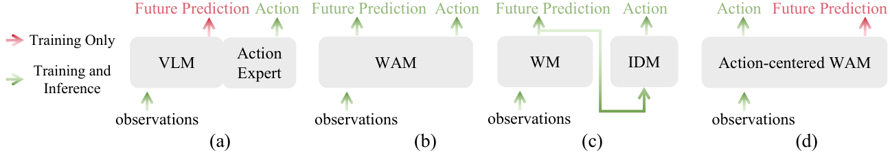
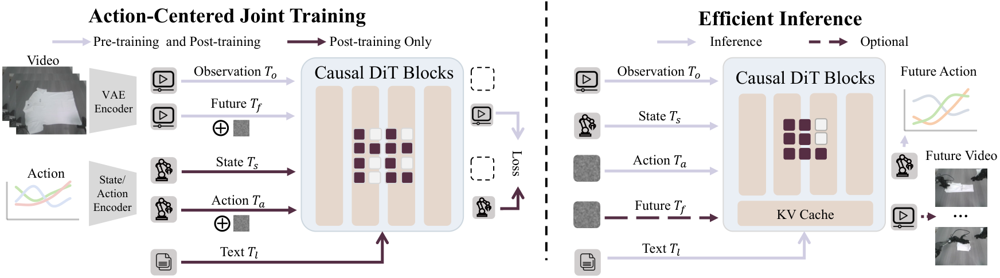
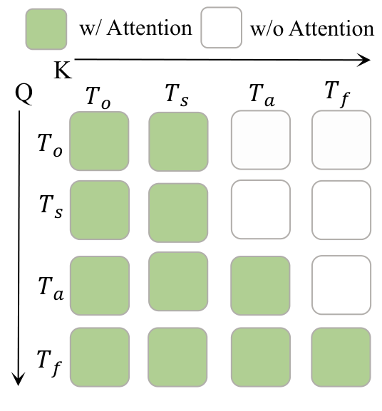
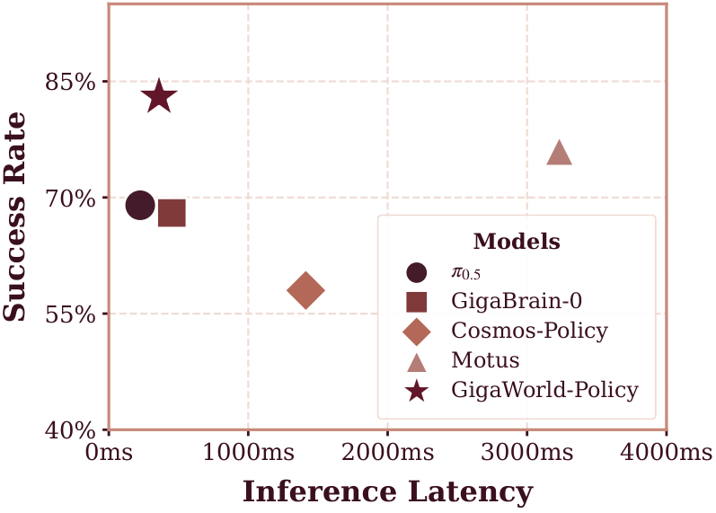
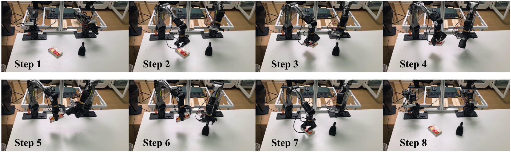
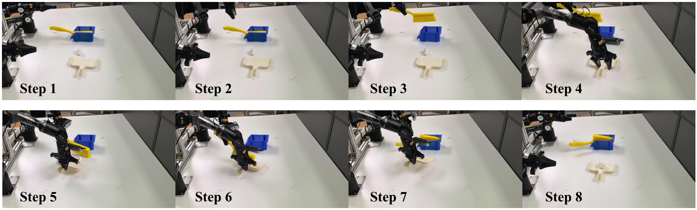
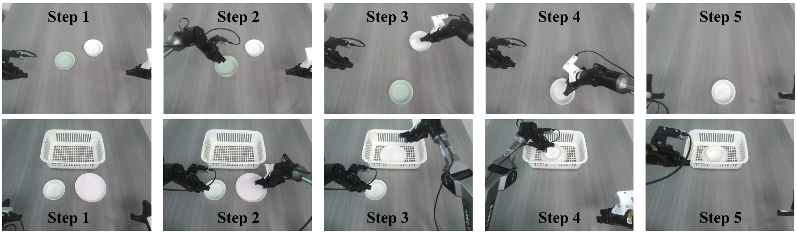
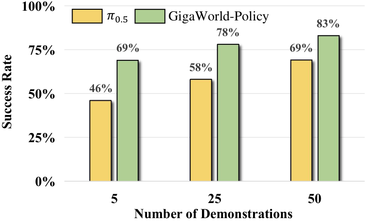
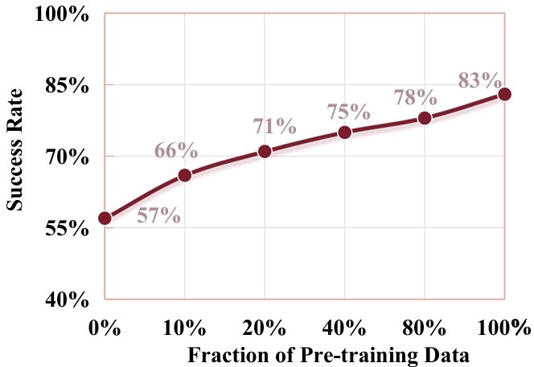
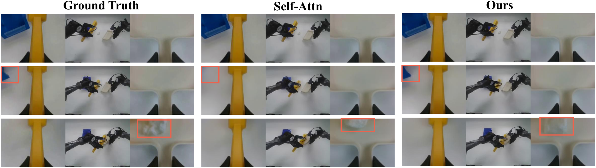

GigaWorld-Policy: An Efficient Action-Centered World--Action Model
1. 论文速览
| 论文要解决什么 | 现有 VLA 只靠稀疏动作标签学习，监督密度不足；现有 WAM 又常把“未来视频生成”和“动作预测”强耦合，推理时必须采样大量视频 token，导致高延迟，并且动作质量容易受未来视频预测误差拖累。 |
|---|---|
| 作者的方法抓手 | 把 WAM 改成 action-centered：模型先预测动作 chunk 和动作 latent，再用这些动作条件去预测未来视频。通过 causal attention mask 保证动作 token 不能看未来视频 token，因此推理时可以只采样动作分支，视频分支只是训练时的动态约束和可选诊断输出。 |
| 最重要的结果 | 在 RoboTwin 2.0 上，GigaWorld-Policy 平均成功率 Clean/Rand 为 0.87/0.85，接近 Motus 的 0.89/0.87，但推理从 Motus 的 3231 ms 降到 360 ms；真实四任务平均成功率 0.83，高于 Motus 0.76、$\pi_{0.5}$ 0.69 和 GigaBrain-0 0.68。 |
| 阅读时要注意的点 | 这篇的主张不是“视频预测在推理时一定要做”，而是“训练时用未来视频作为高密度物理监督，推理时动作路径独立可用”。因此 causal mask 的信息流设计是全文最关键的可复现细节。 |
2. 问题背景与动机
2.1 为什么只做 VLA 不够
VLA 模型通常学习 $a_{t:t+p-1}\sim q_{\Theta}(\cdot\mid o_t,s_t,l)$，输入是当前图像、机器人状态和语言，输出未来一段动作。作者认为这类范式的弱点是动作监督稀疏：动作是低维且模式重复的，而观测和语言很高维。模型可能学到浅层上下文到动作模板的映射，却没有被强迫理解“动作执行后世界会怎样变化”。
2.2 为什么普通 WAM 也不够
近期 WAM 用视频生成模型引入时序密集监督，理论上能让策略学到物理动态。但很多方法把动作和未来视频强耦合：joint action-video prediction 要在推理时生成未来视觉轨迹，两阶段方法则先生成未来视频再用 IDM 解码动作。这带来两个风险：第一，扩散式视频 token 采样很慢；第二，视频预测误差会传递到动作，长时序中小误差会累积。

2.3 本文的核心转向
本文不否认未来视频监督的价值，而是改变它在系统中的角色：未来视频是训练时正则化动作合理性的辅助任务，不是推理时必须完成的中间产物。动作 token 被设计成只依赖当前观测、状态和语言，未来视频 token 只能在动作之后生成，因此视频预测可以被关掉。
4. 方法详解

4.1 任务形式化
每个时刻 $t$，机器人接收多视角 RGB 观测 $o_t=\{o_t^v\}_{v\in S}$，其中 $S=\{left,front,right\}$，还有语言指令 $l$ 和本体状态 $s_t$。策略输出长度为 $p$ 的动作 chunk：
$$a_{t:t+p-1}=(a_t,a_{t+1},\ldots,a_{t+p-1}).$$
传统 VLA 学的是：
$$a_{t:t+p-1}\sim q_\Theta(\cdot\mid o_t,s_t,l).$$
GigaWorld-Policy 则让统一模型 $g_\Theta$ 同时参数化两个条件分布。动作侧：
$$\big(a_{t:t+p-1},c_t\big)\sim g_\Theta(\cdot\mid o_t,s_t,l),$$
其中 $c_t$ 是用于视觉预测的动作 latent conditioning signal。视觉动态侧：
$$ (o_{t+\Delta},o_{t+2\Delta},\ldots,o_{t+K\Delta}) \sim g_\Theta(\cdot\mid o_t,s_t,l,c_t), \quad K=\lfloor p/\Delta\rfloor. $$
这个分解很关键：动作先被建模，未来视频是被动作条件化的后续预测，而不是动作必须依赖的前置预测。
4.2 输入 token 与多视角拼接
为了在不改动视频生成 backbone 的前提下处理三路相机，作者把 left/front/right 三个视角拼成一张 composite image：
$$o_t^{comp}=\mathrm{Compose}(o_t^{left},o_t^{front},o_t^{right}).$$
当前观测和未来观测都通过同一个预训练 VAE 编码成视觉 latent，再切成 spatiotemporal visual tokens：当前观测 token 记为 $T_o$，未来视频 token 记为 $T_f$。本体状态和动作通过线性层映射到 hidden dimension，分别得到 $T_s$ 和 $T_a$。语言指令由预训练语言编码器得到 $T_l$，以 cross-attention 方式注入。
4.3 共享 Transformer 与 causal mask
与 MoE 或多分支专家不同，本文把所有 token 放进同一组 Transformer blocks，共享 Q/K/V 投影。统一序列写成：
$$T_t=[\,T_o;\,T_s;\,T_a;\,T_f\,].$$

这个 mask 施加三条依赖关系：$T_s$ 与 $T_o$ 可互相注意，但不能看动作或未来；$T_a$ 可看 $T_s,T_o$，不能看 $T_f$；$T_f$ 可看 $T_s,T_o,T_a$。它的含义是：动作预测只由当前上下文决定，未来视频预测则由当前上下文和动作决定。这样训练时的视觉动态监督不会通过信息泄漏“作弊”进入动作 token，也为推理时关闭未来视频分支提供结构保证。
4.4 训练目标：两个 flow-matching loss
对动作 token 或未来视频 latent 任一模态 $x$，采样 flow time $s\sim U(0,1)$ 和噪声 $\epsilon\sim\mathcal N(0,I)$，构造：
$$x^{(s)}=(1-s)\epsilon+s x,\qquad \dot{x}^{(s)}=x-\epsilon.$$
未来视频 loss 在 VAE latent $z_f$ 上定义：
$$ \mathcal L_{video}= \mathbb E_{s,\epsilon}\left[ \left\| g_\Theta(z_f^{(s)},s\mid T_s,T_o,T_a,T_l)-\dot z_f^{(s)} \right\|^2 \right]. $$
动作 loss 只条件于历史上下文和语言，不条件于未来视频：
$$ \mathcal L_{action}= \mathbb E_{s,\epsilon}\left[ \left\| g_\Theta(a^{(s)},s\mid T_s,T_o,T_l)-\dot a^{(s)} \right\|^2 \right]. $$
预训练阶段只优化 video flow matching；post-training 阶段联合优化：
$$\mathcal L_{all}=\lambda_{video}\mathcal L_{video}+\lambda_{action}\mathcal L_{action}.$$
4.5 推理：action-only decoding
推理时上下文为 $w_t=(T_l,T_s,T_o)$。模型只初始化和采样动作 token：
$$a^{(0)}\sim\mathcal N(0,I),\qquad \frac{d a^{(s)}}{ds}=g_\Theta(a^{(s)},s\mid w_t),\ s\in[0,1].$$
积分得到 $a^{(1)}$ 后解码为连续动作 chunk $\hat a_{t:t+p-1}$，执行后再用新观测闭环。若需要可视化或诊断，也能打开视频分支：要么联合 denoise 未来视频 token，要么复用动作 denoising 时的 KV cache 再生成视频。但控制本身不依赖这一步。
5. 数据、训练与复现要点
5.1 预训练数据
作者用约 10,000 小时 embodied data 进行预训练，来源覆盖真实机器人视频、egocentric human videos 和通用交互视频。表格中的估计小时数如下：
| 数据源 | 小时数 | 作用 |
|---|---|---|
| EgoDex | 800 | 手部/物体交互、日常操作 primitive |
| Agibot | 2,500 | 机器人真实操作与 workspace 视觉分布 |
| EGO4D | 3,500 | 长时序人类第一视角活动结构 |
| RoboMind | 300 | 机器人操作视频 |
| RDT | 25 | 机器人操作视频 |
| Open X-Embodiment | 3,500 | 跨机器人/跨任务视觉覆盖 |
| DROID | 350 | 真实机器人 manipulation |
| ATARA | 10 | 机器人任务视频 |
| Something-Something V2 | 200 | 物体交互动态先验 |
5.2 训练配方
- Backbone：Wan 2.2 5B diffusion Transformer。
- 动作 chunk 长度：$p=48$。
- 默认未来观测 stride：$\Delta=12$，所以 $K=\lfloor 48/12\rfloor=4$ 个未来帧。
- Post-training loss 权重：$\lambda_{action}=5$，$\lambda_{video}=1$。
- 预训练超参来自附录：约 6000 GPU hours，global batch size 256，AdamW，$\beta_1=0.85,\beta_2=0.9$，learning rate 从 $1\times10^{-4}$ cosine decay 到 $1\times10^{-6}$。
- 真实任务每个任务收集 50 条 demonstration trajectory 用于 post-training；每个方法每任务测试 20 trials，每个 trial 最多 5 次尝试。
- 仿真每个任务 100 个 test episodes；训练数据为 clean scenes 每任务 50 demos、randomized scenes 每任务 500 demos，总计 2,500 clean + 25,000 randomized demonstrations。
6. 实验结果解析
6.1 推理速度与成功率

| 方法 | Time (ms) | Simulation SR | Real-world SR |
|---|---|---|---|
| $\pi_{0.5}$ | 225 | 0.48 | 0.69 |
| GigaBrain-0 | 452 | -- | 0.68 |
| Motus | 3231 | 0.88 | 0.76 |
| Cosmos-Policy | 1413 | -- | 0.58 |
| GigaWorld-Policy | 360 | 0.86 | 0.83 |
相比 Motus，GigaWorld-Policy 的仿真成功率略低 0.02，但延迟从 3231 ms 降至 360 ms，并且真实成功率更高。这个结果支撑了作者的核心论点：世界模型训练信号有用，但推理时不必完整生成未来视频。
6.2 RoboTwin 2.0 仿真
RoboTwin 2.0 包含 50 个代表性 manipulation tasks，评估 clean 与 randomized scenes。主表的平均值为：$\pi_{0.5}$ 0.43/0.44，X-VLA 0.73/0.73，Motus 0.89/0.87，GigaWorld-Policy 0.87/0.85。也就是说，本文方法与最强 WAM baseline 接近，但在实时性上大幅领先。
6.3 真实机器人任务
真实平台为 AgileX PiPER 6-DoF robotic arm。四个任务来自附录的定义：
- Clean the Desk：把多种碗盘移动到目标篮子，且要求盘子在碗下方。
- Stack Bowls：任意初始位姿的两个碗嵌套堆叠。
- Scan a QR Code：拿扫描器、抓目标物、对准 QR code 并读码，再放回目标物。
- Sweep up Trash：拿刷子和簸箕，把散落小物体扫入簸箕。
| 方法 | Clean Desk | Scan QR | Sweep Trash | Stack Bowls | Avg. |
|---|---|---|---|---|---|
| $\pi_{0.5}$ | 0.75 | 0.55 | 0.65 | 0.80 | 0.69 |
| GigaBrain-0 | 0.70 | 0.65 | 0.60 | 0.75 | 0.68 |
| Motus | 0.80 | 0.75 | 0.70 | 0.80 | 0.76 |
| Cosmos-Policy | 0.65 | 0.50 | 0.45 | 0.70 | 0.58 |
| GigaWorld-Policy | 0.90 | 0.75 | 0.75 | 0.90 | 0.83 |



6.4 数据效率与消融


| 消融项 | 设置 | 结果 | 解释 |
|---|---|---|---|
| 预训练组合 | scratch / video init / embodied pretraining / both | SR: 0.45 / 0.57 / 0.73 / 0.83 | 通用视频先验和 embodied data pretraining 互补。 |
| 未来帧数量 | $\Delta=0,4,8,12,24,48$ | SR: 0.60 / 0.76 / 0.78 / 0.83 / 0.80 / 0.76 | 适量未来建模有帮助，过密预测收益递减。 |
| Causal mask | Self-Attn vs Ours | SR 0.81 vs 0.83；PSNR 27.87 vs 28.41；SSIM 0.892 vs 0.901 | 避免未来 token 泄漏，同时改善动作条件视频预测质量。 |

7. 讨论：价值、可信度与局限
7.1 这篇论文最有价值的地方
最大价值是给 WAM 的部署瓶颈提出了一个干净的结构性解法。过去很多“用世界模型做策略”的方法把推理链路做重了：既要想象未来，又要从想象里提取动作。本文把未来动态作为训练信号保留，把动作推理路径从视频推理路径中解耦出来。这一点对真实机器人很重要，因为 3 秒级推理即使成功率不错，也会破坏闭环控制频率；360 ms 虽然还不是高频伺服，但已经进入可部署策略层的范围。
另一个价值是它没有把 future video prediction 简化成“无用的可视化”。消融显示 $K=0$ 时成功率显著下降，说明未来动态监督确实提供了动作学习信号；但 $\Delta=12$ 最优也说明 dense video prediction 不是越多越好。这个结果比“世界模型一定要 rollout”更细腻。
7.2 结果为什么站得住
证据链有三层。第一，速度表直接比较 action-only path 与需要视频推理的 WAM baseline，数值差距很大。第二，RoboTwin 2.0 与真实平台都做了对比，说明不是只在仿真有效。第三，消融把预训练、未来帧数量和 causal mask 分别拆开，能对应到方法的三个主要 claim：大规模 embodied pretraining 有用、未来动态监督有用、mask 让视频分支可选且减少泄漏。
特别是 causal mask 消融，虽然 SR 只从 0.81 到 0.83，但 PSNR/SSIM 和可视化一起说明 mask 改善了 action-conditioned dynamics 的建模质量。这和方法假设一致：动作不应从未来帧偷信息，未来帧应该由动作解释。
7.3 主要局限
- 复现资源重。 5B diffusion Transformer、约 10,000 小时数据、6000 GPU hours 预训练，这不是普通实验室能完整复刻的量级。
- 部分关键工程细节仍需代码确认。 例如多视角拼图布局、动作表示/归一化、flow sampling steps、后训练数据清洗、真实机器人控制接口等，在正文中描述不够细。
- 真实任务数量有限。 四个 PiPER 任务能说明部署潜力，但还不足以覆盖更多接触丰富、动态物体、人机协作或长时序任务。
- 速度仍是策略层速度。 360 ms 相比 WAM 快很多，但如果任务要求更高频的精细力控，仍需底层控制器或更轻量蒸馏策略配合。
- 官方表述存在轻微不一致。 论文表中是 9x 与 +7%，项目页出现 10x 与 +35% 表述；组会汇报时应明确引用哪一处数值。
8. 组会可追问问题
- 如果推理时完全不生成未来视频，训练时的 $\mathcal L_{video}$ 究竟通过哪些参数路径影响动作预测？共享 Transformer blocks 是否足够解释这种迁移？
- Causal mask 让动作 token 不能看未来视频 token，但 action loss 和 video loss 仍共享 backbone。是否可能存在梯度层面的冲突，$\lambda_{action}=5,\lambda_{video}=1$ 是否对不同任务敏感？
- $\Delta=12$ 最优是否与动作 chunk 长度 $p=48$、机器人控制频率和任务时长有关？换机器人或更快任务时该如何设定？
- Composite multi-view image 会牺牲相机间几何结构显式性。相比独立 view token + view embedding，它的优势是否主要来自兼容视频 backbone？
- 未来视频预测质量指标 PSNR/SSIM 与真实控制成功率的相关性有多强？是否存在视频看起来差但动作仍对，或视频好但动作失败的案例？
- 真实任务每任务 50 demos，模型又有大规模预训练。若只允许少量下游 demos，性能瓶颈更多来自 action head 适配还是视觉动态 prior 不够贴近？
9. 复现清单
| 模块 | 必须确认的内容 | 论文给出的信息 |
|---|---|---|
| 代码/权重 | 官方仓库、模型权重、推理脚本、训练配置 | github.com/open-gigaai/giga-world-policy |
| 输入处理 | 三视角 compose 规则、图像分辨率、VAE latent shape | 三视角拼成同分辨率 composite image；视觉 token 用 VAE 编码。 |
| 模型 | Wan 2.2 5B 接入方式、state/action projection、language cross-attention | 共享 Transformer blocks，视觉 2D PE，状态/动作 1D temporal PE。 |
| 训练 | flow steps、batching、loss 权重、optimizer、数据采样比例 | AdamW，batch 256，lr 1e-4 到 1e-6；post-training $\lambda_a=5,\lambda_v=1$。 |
| 评估 | RoboTwin 2.0 任务列表、随机化设置、真实机器人 trial protocol | 50 tasks；clean/randomized；真实任务 20 trials，每 trial 最多 5 attempts。 |
| 推理 | action-only sampling steps、是否使用 KV cache、控制频率 | 默认关闭未来视频，只 denoise action tokens；可选开启视频分支或复用 KV cache。 |
论文页：arXiv:2603.17240； PDF：arxiv.org/pdf/2603.17240； 项目页：GigaWorld-Policy Project。